Nomadic Noms
Nomadic Noms is an Android mobile app that makes it easy for users to locate trendy local food trucks, and quickly order/pay through their phone.
VIEW PROTOTYPEmy role
Research
Branding
UX Design
duration
5 weeks
deliverables
User Surveys
Personas
Competitive Analysis
Branding & Logo
User Stories & User Flows
Wireframes
Mockups
User Testing
Prototype
tools / software
Pencil & paper
Balsamiq
Sketch
Adobe Photoshop
Adobe Illustrator
UsabilityHub
InVision
the problem
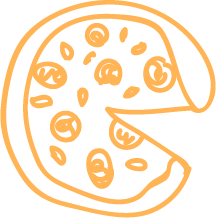Food trucks are increasingly trendy in large cities, popping up on street corners, behind bars, and at music festivals to provide unique, exotic, and authentic culinary styles. Locals and visitors all want to be in-the-know of these trendy food options within their city.
However, since food trucks are mobile and sometimes change locations/ hours, people want a way to discover which trucks are nearby and then view the food truck’s hours and menus, before making the trek out to one. In an age where everything is at the tips of our fingers, hungry folks want to avoid the line, pre-order their food, and pay through their phone.
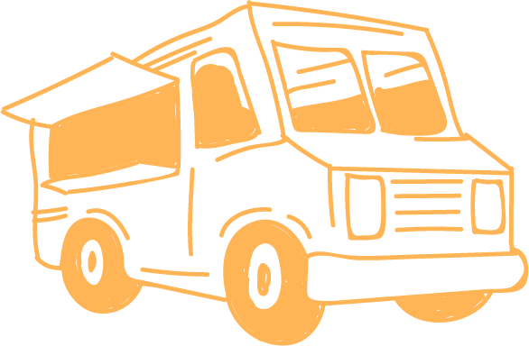the solution
The focus of this project was to listen to and understand users’ needs and desires when they search for local eateries. I used this research to design an app that was fun in appearance, but that more importantly was easy to use, and trustworthy so that users take advantage of the convenience of paying through the app.
audience - user surveys
In order to better understand the users, their habits, and their expectations, I conducted user surveys to gather data that could inform my design decisions.
My initial assumptions were that the audience would be a younger crowd, single, in their twenties, looking for hot new eateries to venture to with friends. I opened the survey to all demographics though, to make sure all potential users were included.
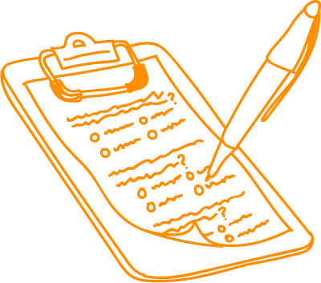Key survey question topics:
- General phone use
- Online payment habits
- Eating out habits
most important discoveries
- 89%
of respondents use maps/navigation apps on their phones
- 78%
currently use mobile banking and/or shopping apps
- 78%
use social media logins to sign-up for apps
- 56%
use apps to explore a new city when they travel
- 67%
prefer mobile/online banking and shopping
- 67%
feel comfortable storing their credit/debit card information within an app account - only if they can trust the app
- 84%
go out for food at least once a week
- 56%
will possibly leave a review for an extremely positive or negative food truck
* I also learned that my demographic assumptions were too narrow. Users of all ages are interested in trying out food trucks. People are likely to go with co-workers or take their young kids to explore food trucks, so I made sure to identify these findings in my user personas.
VIEW SURVEY RESULTSuser personas
After collecting and analyzing the survey data, I conducted follow-up interviews with three users to gain more insight into their frustrations with current apps, and their motivations and goals with a new app.
competitive analysis
In order to gain knowledge of the market and what apps are currently available for users, I completed an extensive competitive analysis, noting their strengths, weaknesses, and opportunities for improvement:
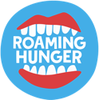Roaming Hunger
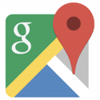Google Maps
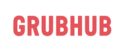Grubhub
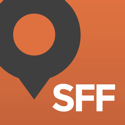Street Food Finder
strengths
- Users can click on the location to view more details, see reviews, photos, and open/closing times
- Users can view the map by food trucks that are currently open vs. all trucks in the area (open and closed)
- Users can save favorites and visit their Favorites list later
- Option to login to the app via Facebook
- Users can track their order and keep in the know about the delivery
weaknesses
- The app does not tag/categorize food trucks, such as into cuisine type, budget-friendly, etc.
- The only option is to login with Facebook (no separate username/password)
- No map view option, only a list view
- Only ‘open’ locations are listed, as opposed to showing all locations for the user’s future reference
- Not an option to save to Favorites
opportunities
- Show menus for the food trucks, and let users order ahead so the food is ready for them to pick-up
- Give users the option to create an account either via a username/password or through social media
- Include a map view and a list view of local trucks
- Allow users to save favorites and a history of their past transactions
- Within the truck details, list any coupons, sales, happy hours, etc.
branding: creating an identity
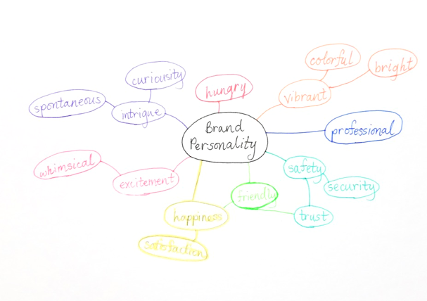 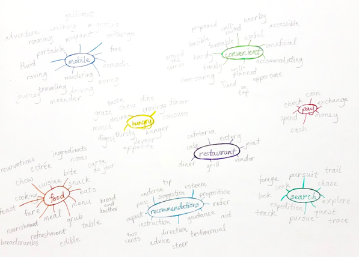 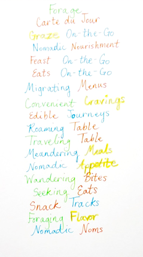initial concepts & goals
Understanding the user and competitors helped inform my branding goals and decisions. I created mind-maps and word associations to brainstorm the brand’s personality, positioning, and identity.
The goal with Nomadic Noms’ branding is to create this sense of joy and creativity, while still being a professional, trustworthy app. The idea of creativity is important because often the food options at food trucks are innovative.
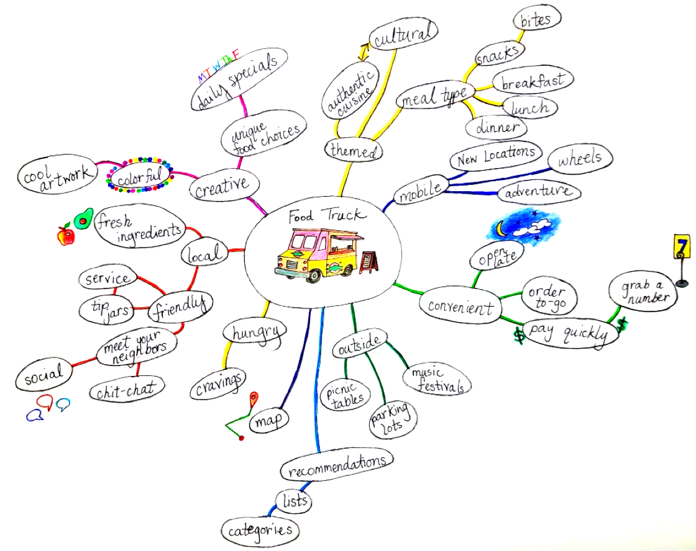logo design
The word associations helped me brainstorm potiential names, which I narrowed down, and sketched out as logos.
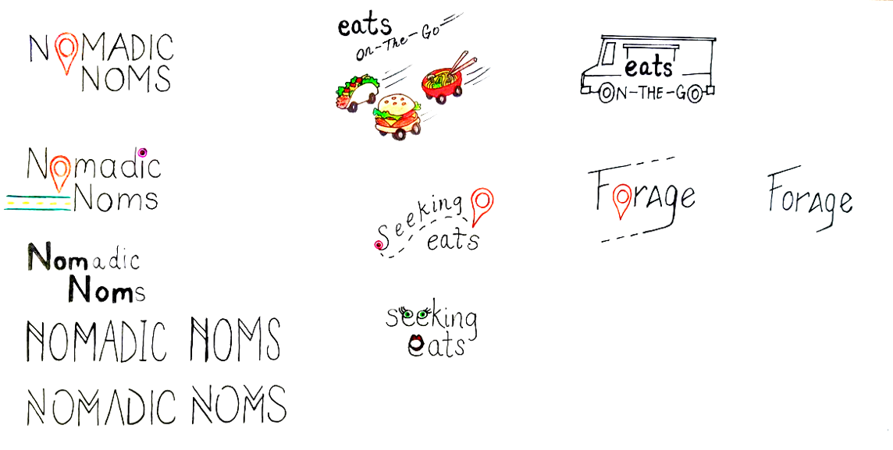 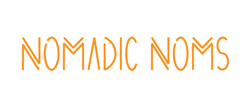name
The name Nomadic Noms was chosen because of its playful repetition of “Nom Nom” and its suggestion of finding food that moves around. I then recreated the Nomadic Noms sketches using Adobe Illustrator.
testing
I presented these options to potential users and received helpful feedback: With a bit more modification, the middle option was preferred as most appropriate for the brand identity. It can be easily read at a mobile size and the map pin can be used as an icon.
final logo variations & icons
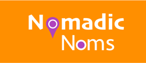 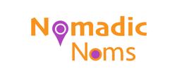 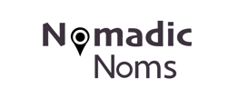typography
Roboto is the primary typeface for Nomadic Noms, because this is an Android app. It must be used with a style of “regular” for standard text, or “medium” when a hierarchy is needed with certain headings.
Roboto Medium
Roboto Regular
abcdefghijklmnopqrstuvwxyz
ABCDEFGHIJKLMNOPQRSTUVWXYZ
colors
primary
#FF8F00
secondary
#AB47BC
Orange is associated with happiness, joy, creativity, and enthusiasm. It is stimulating and is supposed to increase hunger, decision-making, and confidence.
Fuchsia is a bright hue of purple that embodies energy and creativity.
user stories & user flows
Now that I had an understanding of the users’ goals, I wrote out user stories to outline the major tasks they hope to achieve.
As a user, I want to…
- view food trucks near me on a map.
- select a truck, view details, and see a menu
- create an account, and view recent transactions.
- choose items to purchase, and pay for them using my phone.
- rate and review a food truck and view other ratings and reviews.
These user stories were then broken down into step-by-step user flows that show how users interact with Nomadic Noms in order to complete their task.
wireframes
The user stories & flows were crucial for planning the navigation and general content placement of Nomadic Noms. I used Balsamiq to create wireframes which incorporated the goals and motivations of users.
Important navigation and layout features to include:
- ability to access the map and food truck’s menu before being required to create an account
- ability to quickly customize or make changes to an order
- multiple payment options so that users can pay via their preferred method
- option for users to save their payment info for convenient future transactions
mockups
I used these wireframes, my branding decisions, and the Material Design guidelines to create mockups, which went through several iterations with the help of user testing.
first iterations
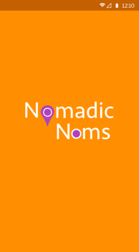 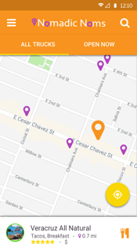 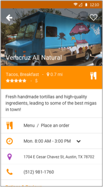 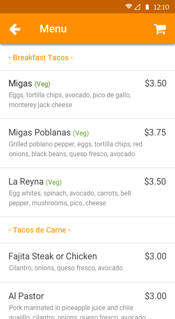 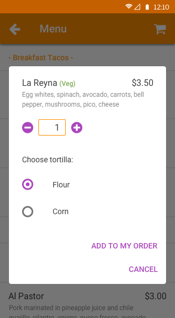 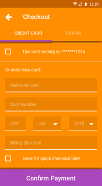I conducted user tests to guide my decisions on element design, content placement, and user interaction to complete tasks.
final mockups
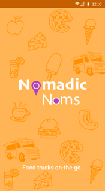 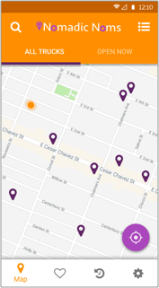 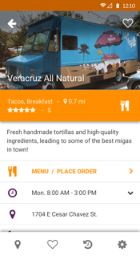 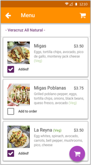 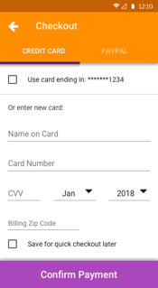user testing focused on:
- ease-of-use
- minimizing steps
- visual coherence
A / B preference test:
map view - selecting a food truck
An important interaction for this app is what happens when the user clicks a certain pin on the map view to find out more details about that food truck.
I ran a preference test to find out which screen users found more informative.
Option B was preferred by 75% of test participants, who also provided some reasons for choosing this layout:
- “Simpler, doesn't use up so much of the map space. I would assume I can tap, or drag up, on the white bar to see a full profile.”
- “So i can continue navigating the map unblocked”
- “Address is easy to see”
I listened to the users and decided to go with screen B, after altering a few details on the design.
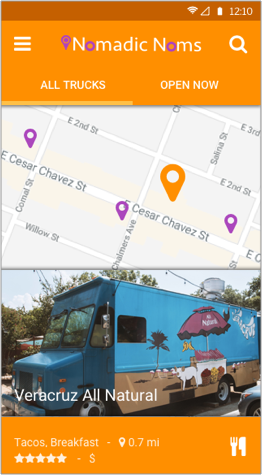 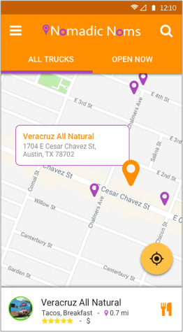A
B
A / B preference tests:
adding menu items to shopping cart
Being able to clickly add or remove food items to your order and change the quantity should be quick and intuitive!
On the food truck menu, should users be able to check off multiple items to their shopping cart at once, or add them one at a time with a modal window to focus on that item?
I ran a preference test to find out which process users found more convenient.
A
B
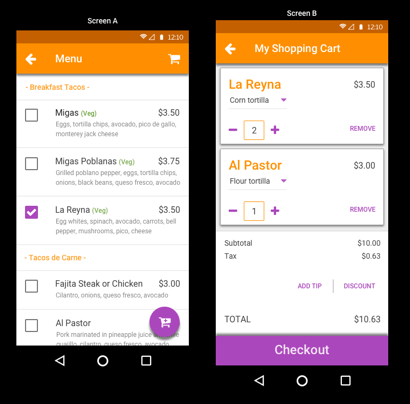 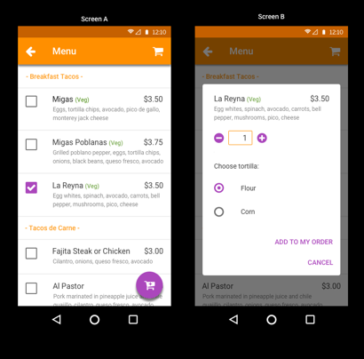51.28%
48.72%
- “I like that I could control the quantity for multiple items at once and see the total.”
- “I would prefer to see both options at checkout, this elimates a step on your part and you can can see all you items right away.”
- “I'm able to focus on changing the quantity and other options before moving onto the next step. It's clearer.”
- “The other option didn't focus on the previously selected item which made it confusing.”
Too close to call!
Users were split on this test, so I took their feedback from both options to improve the menu and ordering process.
I also learned that this test did not provide users with enough details of the full ordering process. In my follow-up test, I showed more steps so that users were truly understanding the amount of clicks in the navigation.
follow-up test:
adding menu items to shopping cart
A
B
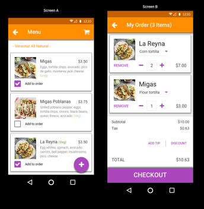 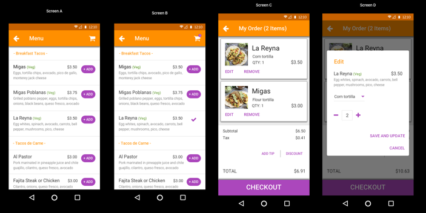73.91%
26.09%
Option A was preferred by 73.91% of test participants:
“Seems easier to follow than the 4 screens of the other option. I understand what's going on and it's visually appealing.” “easier to use, [I] like less steps, [I] like the images from the very beginning” This test was valuable beyond it’s design and navigation
aspects. It taught me how important it is to clearly present
the options to users, how to implement their feedback, and
the importance of continuing to listen to the user
throughout the design process.lessons learned
prototype
I still needed users to actually click through and test out the navigation to make sure they can complete tasks. I used InVision to create a prototype, and watched as users completed certain tasks through their phone.
The users provided feedback such as making certain buttons more obvious, and toning down the bright colors on certain screens.
I made some adjustments, and after final user testing, users stated that the end result is an app that is user- friendly, easy-to-use, trustworthy, and fun.
VIEW PROTOTYPEconclusion
My goal with Nomadic Noms was to create a mobile app that could introduce users to unique food options in their city, or a city they are visiting, and offer the convenience of paying through the app.
The research I conducted through competitive analysis, user surveys, and testing was critical throughout the design process to ensure the design was meeting the needs of the user. Tasks such as selecting food from the menu, paying for the order, and creating an account were made more efficient and now provide a positive user experience.
In considering further development of the current minimal viable product, I would like to work with the food trucks to feature their specials, happy hours, discounts, and other special initiatives that would draw users to continue using Nomadic Noms.